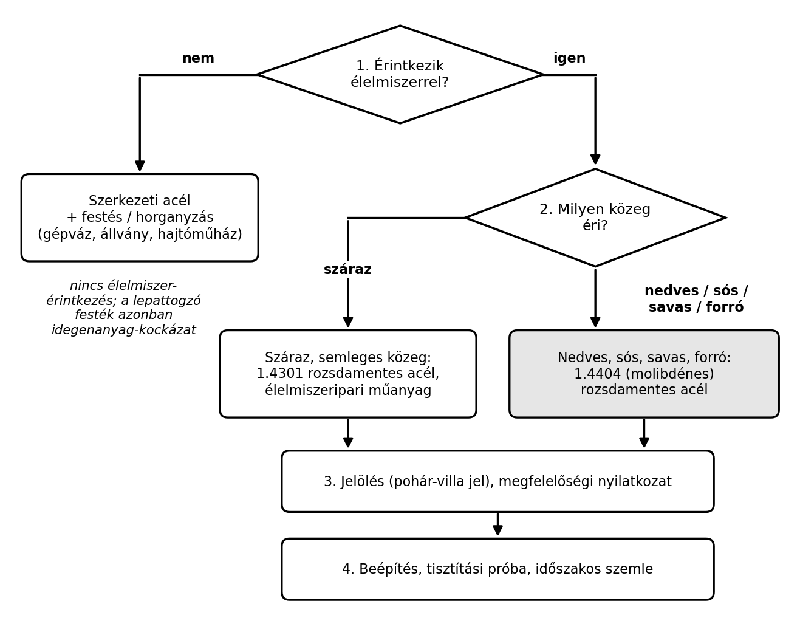

Hajnalban a pék a dagasztógép mellett áll, és azon gondolkodik, miért nem lehet a megsérült, lepattogzott zománcú kelesztőlemezt egyszerűen tovább használni. Közben észreveszi, hogy a rozsdamentesnek mondott keverőtáblán apró, barna pontok jelentek meg a sós víztől. Ha ezeket a jeleket nem ismeri fel, fémdarab, levált bevonat vagy baktériumfészek kerülhet a tésztába. Ezért kell értenie a sütőipari gépek és eszközök anyagait, a korróziót és a felületi sérülések higiéniai kockázatát.
A péknek nem kell kohómérnöknek lennie, de egy egyszerű szempontsort minden eszköznél végig kell gondolnia: élelmiszerrel érintkezik-e, milyen hőmérsékletnek és vegyszernek van kitéve, tisztítható-e, és van-e hiteles jelölése.

A döntési fa azt mutatja, hogy a döntés első lépése mindig az érintkezés ténye, a második a közeg (száraz, illetve nedves, sós, savas, forró). Ahol a felület nem érintkezik élelmiszerrel, ott elegendő lehet a szerkezeti acél megfelelő korrózióvédelemmel. Ahol érintkezik, ott az élelmiszeripari minőségű anyag és a dokumentáció elengedhetetlen.
Definíció. Élelmiszerrel érintkező anyag (FCM – food contact material): minden olyan anyag, tárgy, felület vagy bevonat, amely a késztermékkel, nyersanyaggal vagy köztes termékkel közvetlenül, illetve szándékoltan érintkezésbe kerülhet. Ide tartozik a dagasztóteknő belső felülete, a sütőlemez, a szakajtó, a műanyag rekesz, a teflonos forma, a csőrendszer tömítése és a szállítószalag felülete is.
Definíció. Korrózió: a fémfelület károsodása kémiai vagy elektrokémiai reakció következtében, leggyakrabban nedvesség, só, sav, lúg, hő és oxigén együttes hatására. A korrózió nemcsak esztétikai hiba: érdes, lyukas, pikkelyes felületet hoz létre, amelyen baktériumok tapadhatnak meg, és fémionok, illetve bevonatdarabok kerülhetnek az élelmiszerbe.
Szabály. A pék feladata nem a kohászati minősítés, hanem annak felismerése, hogy egy felület megfelelő-e az élelmiszer-biztonsághoz, és mikor kell jelezni a cserét vagy a javítást.
A szerkezeti acél (közönséges szénacél) olcsó, nagy szilárdságú, ezért a gépvázak, állványok, hajtóműházak, csapágyházak anyaga. Nedvesség hatására rozsdásodik, ezért az élelmiszerrel közvetlenül érintkező felületre általában nem alkalmas. A külső vázszerkezeteken festéssel, horganyzással vagy más bevonattal védik a korróziótól. Ha a festék lepattogzik, az nemcsak esztétikai, hanem higiéniai kockázat is: a levált festékdarab idegenanyagként a tésztába kerülhet, a csupasz acél pedig tovább rozsdásodik.
A sütőipari gépek és eszközök legfontosabb fémes anyaga a rozsdamentes acél. A krómtartalom (legalább 10,5 m/m% – ellenőrizendő: a pontos szabványi határ) hatására a felületen vékony, tömör, öngyógyuló passzív réteg alakul ki, amely véd a rozsdásodástól. Ez a réteg azonban nem örök: sós, savas közegben, karcolás vagy tisztítószer-maradvány hatására megsérülhet.
Gyakori élelmiszeripari minőségek (ellenőrizendő: MSZ EN 10088 sorozat szerinti jelölés):
A pék számára a gyakorlati szabály az, hogy a sós, savas, nedves, forró felületeken a molibdénes rozsdamentes acél a biztonságosabb. A hegesztett varratokat, karcolt felületeket tisztítás után savazni és passziválni kell; ezt a karbantartó vagy a gépgyártó végzi, a pék a sérülést jelzi.
Az alumínium könnyű, jól hővezető, ezért sütőlemezek, tepsik, formák anyaga lehet. Hátránya, hogy savas és lúgos közegben oldódhat, elszíneződhet, és fémíz kerülhet a termékbe. A savanyú gyümölcsös töltelék vagy az ecetes páclé kimarhatja az alumínium felületét. Ezért az alumínium tepsiket gyakran bevonattal (például teflonnal vagy szilikonnal) látják el, vagy csak olyan termékhez használják, ahol a savas hatás nem jelentős. Az alumíniumból készült eszköznél is ellenőrizni kell az élelmiszeripari minőséget és a bevonat épségét.
Figyelem. Lúgos (nátronlúgos) perecoldattal kezelt terméket bevonatlan alumínium lemezen sütni tilos: a lúg oldja az alumíniumot, gáz (hidrogén) fejlődik, és alumínium kerülhet a termékbe. Ilyenkor rozsdamentes acél lemezt vagy a gyártó által lúgállónak minősített sütőpapírt/sütőfóliát használjunk (ellenőrizendő: gyártói adatlap, üzemi utasítás).
A réz kiváló hővezető, de élelmiszerrel érintkező felületként csak bevonattal használható, mert a rézionok kioldódhatnak, és mérgezőek lehetnek. A sütőiparban a réz és ötvözetei inkább csapágyakban, hajtóművekben, szerelvényekben fordulnak elő, ahol nincs élelmiszer-kontaktus. A bronz és a sárgaréz szintén nem élelmiszerrel érintkező felületre való.
A műanyagok (például polietilén, polipropilén, polikarbonát, poliamid) könnyű, olcsó, jól tisztítható anyagok. A pékségben vödrök, rekeszek, lapátok, kaparók, tömítések, szállítószalagok készülnek belőlük. Két fontos feltételt kell teljesíteniük:
A műanyag idővel karcolódik, repedezik, elöregszik. A karcos, repedt műanyag felület baktériumfészek, és leváló darabok kerülhetnek a tésztába, ezért az ilyen eszközt selejtezni kell.
A teflon (politetrafluor-etilén, PTFE) tapadásmentes bevonat, elsősorban sütőlemezeken, formákon, tepsiken. Hőálló, de túlhevítve (kb. 260–280 °C fölött, ellenőrizendő: gyártói határérték) bomlásnak indulhat. A legnagyobb gyakorlati kockázat a karcos, lepattogzott bevonat: a sérült részen a fém kilátszik, a bevonatdarabok az élelmiszerbe kerülhetnek. A karcos teflonedényt nem szabad tovább használni, mert a sérülés higiéniai és idegenanyag-kockázatot jelent.
A szilikon rugalmas, hőálló, tapadásmentes anyag; formákban, spatulákban, tömítésekben, sütőlemez-bevonatként használják. Élelmiszeripari minőség esetén jól tisztítható. A szilikon azonban vágható, szakadtható: a sérült szilikonforma belsejében baktériumok telepedhetnek meg, és darabok válhatnak le. Csak ép, gyártói bevizsgálással élelmiszerre engedélyezett szilikont szabad használni.
A fa hagyományos anyag a sütőiparban: szakajtó, dagasztólapát, deszka, nyújtófa. A fa porózus, magába szívja a nedvességet, és nehezen fertőtleníthető. Emiatt élelmiszerrel érintkező felületként csak olyan ép, sima, repedésmentes fa eszköz használható, amelyet minden használat után alaposan megtisztítanak és szárazon tárolnak. A repedt, penészes, szálkás fa eszközt ki kell vonni a használatból. A modern üzemekben a fát gyakran műanyag vagy rozsdamentes acél váltja fel.
Előírás. Az élelmiszerrel érintkező anyagokra és tárgyakra az 1935/2004/EK rendelet ad alapkövetelményeket: az anyag ne adjon le az élelmiszerbe az egészségre veszélyes összetevőt, ne változtassa meg elfogadhatatlanul az élelmiszer összetételét, és ne rontsa az érzékszervi tulajdonságait. A gyártónak biztosítania kell a nyomonkövethetőséget és megfelelőségi nyilatkozatot. A 2023/2006/EK rendelet a jó gyártási gyakorlatot írja elő. A műanyagokra a 10/2011/EU rendelet ad kioldódási határértékeket és engedélyezett anyaglistát. (A rendeletszámok és a hatályos módosítások ellenőrizendők.)
A csomagoláson vagy a termékdokumentációban a „pohár-villa” szimbólum vagy a „élelmiszerrel érintkezhet”, „for food contact” felirat jelzi az élelmiszeripari használatra való alkalmasságot. Ennek hiánya vagy bizonytalan eredete esetén a terméket nem szabad élelmiszerrel érintkező felületként használni. A pék ne bízzon a „simának tűnik” alapon; kérje a gyártói adatlapot, és ellenőrizze a jelölést.
A pékek leggyakrabban a következő korróziós jelenségekkel találkoznak:
A korrózió higiéniai kockázata világos: a korrodált felület érdes, lyukas, nehezen tisztítható, baktériumfészek; a leváló rozsda, bevonatdarab, fémrészecske idegenanyag a termékben; a kioldódó fémionok érzékszervi hibát (fémes íz, elszíneződés) okozhatnak.
A napi szemrevételezéskor ezeket a jeleket kell felismerni. Az ábra 1–4. képe a fenti korróziófajtákat mutatja (a feszültségkorrózió hajszálrepedése szabad szemmel ritkán látszik), az 5. kép a sérült bevonatot, a 6. kép viszonyításként az ép rozsdamentes felületet; minden kép alatt az idegenanyag-kockázat és a teendő áll.
A teendő minden esetben a jelentéssel kezdődik: a pék nem csiszolja, nem festi és nem „foltozza” a sérült felületet, hanem a műszakvezetőnek vagy a karbantartónak szól, és a sérült eszközt addig nem használja élelmiszerrel érintkező felületként. A rajz sematikus; a valódi megjelenés anyagtól és szennyezettségtől függ, ezért kétség esetén a felületet szakember értékeli. A HTML-változatban a képekre mutatva a teendő is megjelenik.
A korrózióvédelem első lépése a megfelelő anyag kiválasztása. A második a felületmegmunkálás: a sima, zárt, polírozott felület kevésbé korrodál. A harmadik a konstrukciós védelem: rések, sarkok, vízgyűjtők elkerülése. A negyedik a bevonat: festék, zománc, teflon, szilikon, horgany. Az ötödik a működtetés: só- és savmaradványok eltávolítása, öblítés, szárítás.
Szabály. A sérült bevonatú eszközt (lepattogzott zománc, karcos teflon, repedt műanyag, rozsdás felület) tilos élelmiszerrel érintkező felületként tovább használni. A bevonat nem „foltozható” házilag. A sérült eszközt le kell selejtezni, vagy szakszervizben felújíttatni, és a javítás után meg kell győződni a megfelelőségi nyilatkozat érvényességéről. Hegesztési varrat, csavar, tömítés sérülése esetén a gépkönyv és a gyártó utasítása szerint kell eljárni.
Példa 1: anyagválasztás sós tésztához. Egy pékségben sós, nedves rozstésztát dagasztanak, amelyet hosszú ideig tartanak a keverőtáblán. A pék választhat 1.4301 és 1.4404 rozsdamentes acél közül. A sós, kloridos közeg miatt a molibdénes 1.4404 jobb választás, mert a kloridok kevésbé támadják meg a passzív réteget. Az 1.4301 is használható lenne, de gyakoribb pontkorróziós károsodással kellene számolni. Ezért a karbantartással egyeztetve 1.4404-es anyagú felületet választanak, és minden műszak végén tiszta vízzel öblítenek, majd megszárítják a felületet.
Példa 2: karcos teflonos sütőlemez. A pék a reggeli kisütésnél észreveszi, hogy a teflonos lemezen egy hosszú karcolás fut végig, és a bevonat széle lepattogzott. A hiba oka valószínűleg fém spatula használata volt. A pék nem használja tovább a lemezt, jelenti a műszakvezetőnek, és a lemezt selejtezik. A tanulság: a tapadásmentes bevonathoz csak fa, műanyag vagy szilikon eszközt szabad használni, és a sérült bevonatú eszköz idegenanyag-kockázatot jelent.
Egy pékségben a dagasztógép rozsdamentes keverőtábláján apró barna pontokat vettek észre. A pék először csak esztétikai hibának gondolta, de a minőségellenőr megállította a gyártást. A vizsgálat során kiderült, hogy a sós víz a táblán maradt, és a tábla anyaga 1.4301 volt. A pontkorróziós lyukakban baktériumok telepedhetnek meg, amelyek a tésztát szennyezhetik. A táblát szakszerűen újracsiszolták, savazták és passziválták, majd a továbbiakban minden műszak után azonnal eltávolították a sós levet, tiszta vízzel öblítettek, és megszárították a felületet. Az eset tanulsága: a korrózió nem magától gyógyul, és a higiéniai ellenőrzés része a felületek szemrevételezése.
A pék minden műszak elején és végén szemrevételezéssel ellenőrizze az élelmiszerrel érintkező felületeket:
Ha bármelyik pont eltér, a pék ne használja az eszközt, és jelentse a műszakvezetőnek.
1. feladat (A): Soroljon fel négy, a sütőiparban élelmiszerrel érintkező felületként használt anyagot, és mindegyikhez adjon egy-egy tipikus alkalmazást.
2. feladat (A): Egy pékség új kelesztőlemezeket vásárol. A lemezek alumíniumból készülnek, bevonat nélkül, és savanyú gyümölcsös töltelékkel készült kelt tésztát kell rajtuk sütni. Jó választás-e ez? Indokolja meg, és adjon jobb megoldást.
3. feladat (B): Hasonlítsa össze a szerkezeti acél és a rozsdamentes acél alkalmazását a dagasztógépen! Melyik részekhez milyen anyagot választana, és miért?
4. feladat (B): Ismertesse a korrózió három fajtáját, és mindegyikre írjon egy sütőipari példát!
5. feladat (C): Egy pékségben a rozsdamentes keverőtáblán pontkorróziós foltokat észlelnek. A dolgozó azt javasolja, hogy a foltokat dörzsöljék át drótkefével, majd használják tovább. Miért veszélyes ez a gyakorlat? Mit kell tenni a helyes eljárás során?
6. feladat (D): Vegyen szemügyre egy tepsit vagy sütőlemezt a tanműhelyben. Vizsgálja meg az anyagát, a bevonat épségét, a jelölését, és írja le, milyen hibákat lát. Milyen döntést hozna a használatáról?
Önellenőrzés – válaszok
1. feladat (A) megoldása: Például: (1) rozsdamentes acél – dagasztóteknő; (2) élelmiszeripari műanyag – lapát, rekesz; (3) teflon – sütőlemez; (4) fa – szakajtó. Mindegyiknél lényeg a jelölés és a felület épsége.
2. feladat (A) megoldása: Nem jó választás, mert az alumínium savas közegben oldódhat, a savanyú gyümölcs töltelék kimarhatja a lemezt, fémes ízt és elszíneződést okozhat. Jobb megoldás: teflon- vagy szilikonbevonatú lemez, vagy rozsdamentes acél lemez, esetleg bevonatos alumínium.
3. feladat (B) megoldása: A gépváz, állvány, hajtóműház szerkezeti acél, mert ott nincs élelmiszer-kontaktus, és a festés vagy horganyzás véd a korróziótól. Az élelmiszerrel érintkező teknő, keverőkar, munkalap rozsdamentes acél legyen, mert annak passzív rétege véd, és a felület sima, jól tisztítható. Sós, savas közegben 1.4404 javasolt.
4. feladat (B) megoldása: Például: egyenletes korrózió – festetlen szerkezeti acél rozsdásodik; pontkorrózió – 1.4301 táblán sós lé hatására apró barna pontok; réskorrózió – tömítés alatt, szűk résben rozsdásodik a rozsdamentes acél. A kontaktkorrózió is említhető: alumínium és rozsdamentes acél érintkezésekor az alumínium gyorsabban oldódik.
5. feladat (C) megoldása: A drótkefés dörzsölés érdes, karcolt felületet hagy, amely baktériumfészek és gyorsabban újrakorrodálódik; a rozsdafolt nem tűnik el teljesen, és a felület higiéniai kockázata nő. A helyes eljárás: a munkát leállítani, a felületet szakszervizben újracsiszolni, savazni, passziválni, majd ellenőrizni. Ezt követően a sós levet azonnal el kell távolítani, a felületet öblíteni és szárítani.
6. feladat (D) megoldása: A válasz a tanuló megfigyelésétől függ, de elvárt elemek: anyag azonosítása (alumínium, rozsdamentes, teflonos), bevonat épsége (nincs karc, lepattogzás), jelölés megléte, a felület simasága, sérülés esetén selejtezés vagy jelentés, használat előtti tisztítás ellenőrzése.
A sütőipari gépek és eszközök anyagválasztása élelmiszer-biztonsági kérdés, nem csak műszaki részlet. A közönséges szerkezeti acél csak a gépvázhoz való; élelmiszerrel érintkező felületre elsősorban rozsdamentes acél, élelmiszeripari műanyag, teflon, szilikon vagy ép fa alkalmazható. A rozsdamentes acél közül sós, savas közegben az 1.4404 (molibdénes) előnyösebb, mint az 1.4301, de egyik sem örök: pontkorrózió kialakulhat, ezért a felületet tisztítani és szárítani kell. A korrózió nemcsak esztétikai hiba, hanem baktériumfészek és idegenanyag-forrás. A sérült bevonatú eszközt (karcos teflon, lepattogzott zománc, repedt műanyag, rozsdás felület) ki kell vonni a használatból, selejtezni vagy szakszerűen felújíttatni. Az élelmiszerrel érintkező anyagokra az 1935/2004/EK és a 10/2011/EU rendelet követelményei vonatkoznak, a gyártónak megfelelőségi nyilatkozatot kell adnia. Továbbvitt eredmény. Ezt a szemléletet használjuk a Gépelemek, hajtások és csőrendszerek alfejezetben: a tömítések, csövek, hajtóművek anyagánál is ugyanígy kell elválasztani az élelmiszerrel érintkező és a nem érintkező részeket.